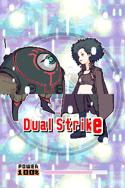
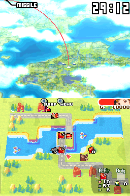
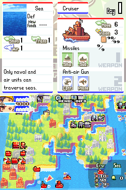
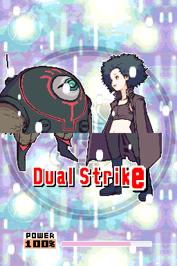
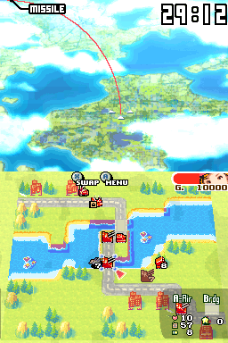
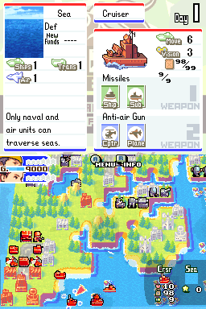

Advance Wars: Dual Strike

Not Complete on 2022-07-01
3 / 5
Release Date: Aug 22, 2005
Meta Score: 90
Screenshots
 





Notes
Advance Wars Dual Strike is a very straight adaptation of Advance Wars onto the DS. You have the option to use touch screen controls but that's it really.
The core gameplay is the same as the classic Advance Wars formula. What they've done is even more of the stuff we saw in AW2 on GBA: more COs, more units including a super-super-heavy tank and some whacky stuff like stealth bombers, more weird Black Hole structures and mission objectives. I think the game is almost buckling under the weight of all this stuff, but it just about manages to hold up.
The big new thing is having a tag team of 2 COs, either split across two fronts or alternating turns on a single battlefield. This leads to the new double-super CO power where you get to use both super powers and take 2 turns in a row. This mechanic is insanely swingy as taking 2 turns and getting 2 powers is ridiculous. It's a combination of demoralising and annoying when the AI does it as you have to sit through 2 turns of getting hammered extra hard, and they nearly always get to use theirs first because it charges up faster when you're losing units. I'm not very convinced this adds a lot to the game.
Another problem is that remembering all the factors involved in damage calculation makes it a lot harder to predict the outcome of any given battle, which should be a core part of AW gameplay. You've got 8 different COs interacting with their abilities modifying things, terrain, Com Tower buffs, and a lot more types of units in the mix. It's just a mess really, and detracts from what I see as the tight strategy core of AW as a series.
I still hate fog of war missions.
I think the campaign is tuned to be kind of easy. I certainly found myself walking through missions for a long time. In general it felt like as long as you went with a vaguely reasonable strategy victory was pretty inevitable. There is a hard campaign so maybe that is tuned to be more challenging.
A lot of the time I felt that starting missions was a big roadblock. Especially later in the game where the missions become big and complicated, with you controlling 3 factions with 2 COs each, I just found myself struggling to find the energy to start missions.
Overall the core of Advance Wars is the solid strategy game it's always been, but it's grown out of control and too bombastic in this installment. The bigger and more elaborate the maps get, the harder I find it to keep playing, and I ultimately decided to put this down.